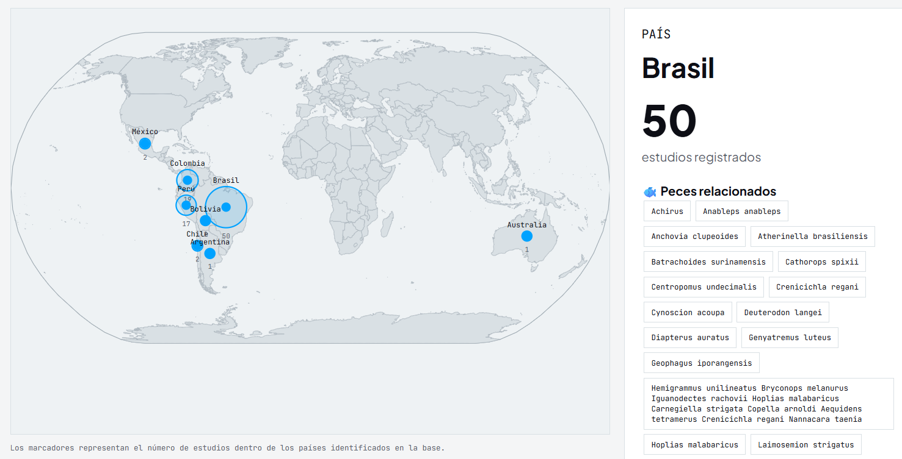
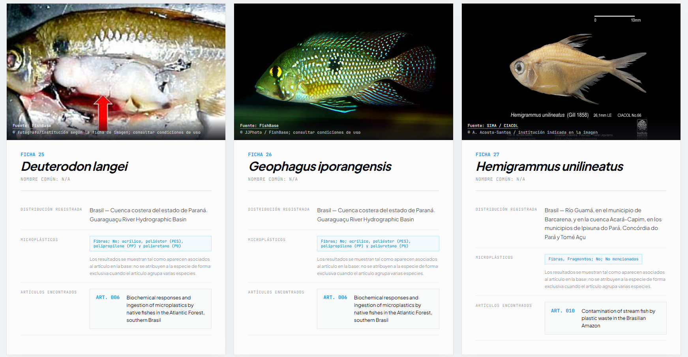
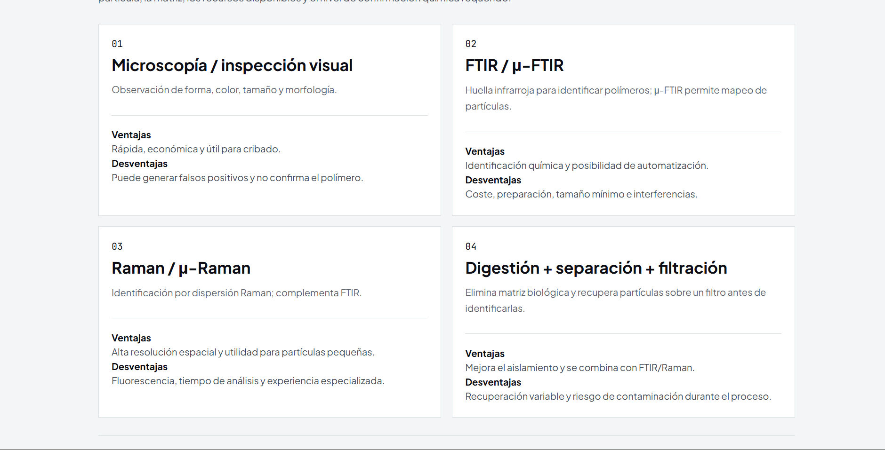

Base de datos 2016 - 2026
Esta estudio revisa y presenta más de cien articulos, revisiones entre otros de latinoamerica.
En resumidas cuentas:
Tabla con Titulo, autores, año, DOI, resumen y microplasticos encontrados por pais, cuenca y especie.

Informacion de: ubicacion, especie, microplasticos y quimica cuenca y otras particulas antropogenicas

Ficha donde la especie tendra un listado de los microplasticos encontrados citados.

Tipos de estudios sobre los metodos empleados por los estudios encontrados
04 / Más alla de la caractrerizacion: posibles soluciones
Encontrar una fibra, un fragmento o una partícula compatible con plástico es solo el comienzo. La pregunta científica cambia cuando pasamos de “¿qué encontré?” a “¿qué significa, cómo lo demuestro y qué puedo hacer con esa evidencia?”
La solución no empieza necesariamente con una tecnología espectacular. Empieza por definir qué partícula queremos retirar, de dónde viene, dónde se encuentra y qué significa “eliminarla”.
Un espacio para compartir experiencias, métodos, resultados, preguntas e ideas de solución. Esta versión funciona localmente en el navegador; para que los aportes sean compartidos entre visitantes habrá que conectarla a un backend.